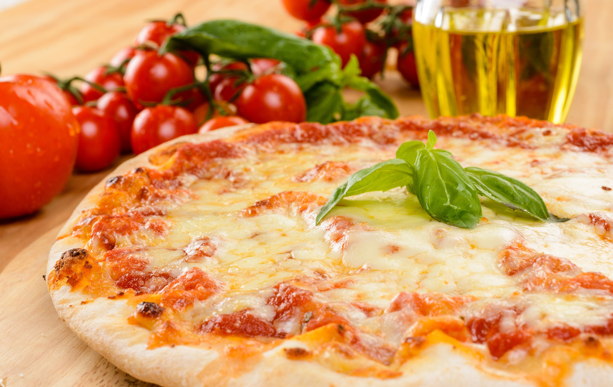

Pizza · Tradición
Por Parra Francys · 23 de agosto de 2025
Si alguna vez has probado una verdadera pizza italiana, sabrás que es una experiencia completamente diferente. Masa delgada, crujiente pero elástica, ingredientes frescos y un equilibrio de sabores que te transporta directamente a las calles de Palermo o Nápoles. En Katané Pizza, esa experiencia vive en el corazón de Panamá.
Pero ¿qué hace que una pizza sea realmente italiana? ¿Por qué hay tanta diferencia entre una pizza de cadena de comida rápida y la que encuentras en un restaurante de tradición siciliana? En este artículo te lo explicamos todo, y de paso te contamos por qué Katané Pizza se ha convertido en el referente de la auténtica pizza italiana en el país.
La pizza italiana no es simplemente un plato: es un sistema de valores. Hay reglas no escritas —y algunas muy bien escritas— que distinguen a una pizza genuina de una imitación. Todo comienza con tres elementos fundamentales: la masa, la salsa y los ingredientes.
Una pizza italiana auténtica se elabora con una masa que ha reposado el tiempo necesario. En la tradición siciliana que practicamos en Katané, la fermentación lenta —entre 48 y 72 horas— es innegociable. Este proceso descompone los almidones de forma natural, produciendo una masa más digestiva, con alvéolos abiertos y un sabor profundo que ninguna levadura química puede replicar.
La harina importada, el agua con el nivel de dureza correcto, la sal marina y la levadura fresca son los únicos ingredientes. No hay aditivos, no hay conservantes. Cuando la masa entra al horno de piedra a más de 350 °C, el resultado es ese borde dorado y aireado —el famoso cornicione— que es la firma de una pizza bien hecha.
La salsa de tomate de una pizza italiana auténtica no lleva horas de cocción. Es tomate San Marzano —o de variedad equivalente, con la acidez y el dulzor equilibrados—, triturado apenas, con unas hojas de albahaca fresca y un hilo de aceite de oliva extra virgen. Cocinar la salsa en exceso la vuelve pastosa y le roba su carácter. En Katané, la salsa se prepara al momento, sin más manipulación de la necesaria.
La tentación de poner más topping es grande, pero una pizza italiana sabe que la moderación es elegancia. Mozzarella de búfala o fior di latte, ingredientes cárnicos en proporciones exactas, vegetales de temporada. Cada elemento tiene su espacio y su razón de ser. La pizza no es un contenedor: es una composición.
Katané Pizza nació en 2015 con una misión clara: traer la auténtica tradición pizzera de Sicilia a Panamá. El nombre mismo —Katané— es la denominación griega antigua de Catania, la ciudad volcánica al pie del Etna que los sicilianos consideran la cuna de su gastronomía más vibrante.
Sicilia tiene una relación especial con la pizza. A diferencia de Nápoles, que es la madre de la pizza redonda y de borde alto, Sicilia desarrolló su propia escuela: masas más trabajadas, ingredientes del Mediterráneo, influencias árabes y normandas que se leen en cada bocado. El agridulce, las aceitunas, las anchoas, las berenjenas y los quesos locales son protagonistas.
En Katané no copiamos esas recetas: las interpretamos con los mejores ingredientes disponibles en Panamá y con algunos productos importados clave que marcan la diferencia.
Pedir una Margherita en un restaurante italiano nuevo es la mejor forma de evaluar su nivel. Si la masa está bien fermentada, la salsa tiene carácter y la mozzarella funde sin encharcarse, estás en buenas manos. La nuestra ha convertido a muchos escépticos.
Salami piccante, tomate, mozzarella y un toque de aceite de ají. La Diavola es una clásica italiana que exige un embutido de calidad para brillar. El equilibrio entre el picante del salami y la dulzura de la salsa es donde se gana o se pierde esta pizza.
Cuatro quesos seleccionados con criterio: cada uno aporta una capa de sabor distinta. Esta pizza no necesita salsa de tomate; la base es blanca y los quesos hacen todo el trabajo. Es intensa, untuosa y absolutamente adictiva.
En Katané rotamos pizzas de temporada que incorporan ingredientes disponibles en su mejor momento. Pregunta a nuestro equipo qué hay de nuevo: siempre hay alguna sorpresa en el menú del día.
En Italia, la pizza no se come de prisa. Es un momento social, una excusa para sentarse, hablar y disfrutar. Llega entera a la mesa —nunca precortada en una pizza napolitana de calidad— y cada comensal la dobla a lo largo si quiere comerla con la mano, o la corta con cuchillo y tenedor si prefiere la formalidad.
En Katané te traemos la pizza ya cortada para tu comodidad, pero el espíritu es el mismo: siéntate, pide lo que te gusta, no tengas prisa. Una buena pizza merece ser disfrutada.
Si todavía no has visitado Katané Pizza, te invitamos a que vengas con las personas que más quieres. Tenemos tres sucursales en la ciudad y un menú que honra la mejor tradición de Sicilia. Te prometemos que la primera visita no será la última.
¿Te gustó lo que leíste?
Las palabras saben bien, pero nuestra cocina sabe mejor.